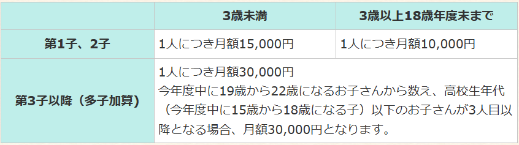

龍ケ崎市の子育て支援とは？
龍ケ崎市では、安心して子育てができるように 手当・相談・保育サービス・イベント・医療支援など さまざまなサポートを行っています。
ここでは主な支援内容を、わかりやすくまとめています。
🍼 主な子育て支援制度
① 児童手当
龍ケ崎市では、子育てを応援するための手当が支給されています。
受給者
1.支給対象の児童の父または母のうち、所得の高い方
2.支給対象の児童の未成年後見人
3.支給対象の児童の父母が国外在住の場合に、父母に代わって児童を養育する者として指定を受けた方（父母指定者）
4.支給対象の児童を養育している里親
5.1から4以外で、支給対象の児童を養育している方
※支給対象の児童が児童福祉施設等に入所している場合は、当該施設の設置者等が受給者となります。
対象児童
0歳から高校生年代まで（18歳に達した後、最初の3月31日をむかえるまで）の児童
支給額
支給時期
児童手当は原則2、4、6、8、10、12月にそれぞれの前月分までの手当てを支給しています。
振込日は10日です。ただし、10日が土、日、祝日と重なる場合、直前の平日が振込日となります。
ただし対象者や金額は年度により変わるため、公式サイトで最新情報を確認する必要があります。
また、児童手当の手続きについての書類は公式ページにございますのでご確認ください
②📞 子育て相談窓口
龍ケ崎市では、子育てに関する悩み・不安を相談できる窓口が複数用意されています。
■ こども家庭センター
対象：妊産婦および18歳未満のこどもと保護者
内容：妊娠・出産・育児に関する総合相談、虐待・家庭の不安など幅広く対応
場所：龍ケ崎市役所保健福祉棟・1階
受付時間：平日 9:00〜17:00(土日祝日・年末年始は除きます。)
電話：0297-64-1111（代表）
■ 龍ケ崎市教育センター
内容：学校生活・発達・友人関係などの相談
対象：龍ケ崎市在住の龍ケ崎市小中学校に在籍する児童生徒
電話相談専用ダイヤル：0297-64-1115
電話相談受付：平日（祝日を除く） 9:00〜16:00
来所相談時間：平日（祝日を除く） 9:30～16:30
■ 子育て支援アプリ「たつのこたっち」
内容：予防接種、育児・妊娠情報の管理、育児イベント、子育て支援などの情報をスマホで確認
利用料：無料
たつのこたっちに関する詳しい説明、およびダウンロード方法（公式サイト）
③ 保育サービス
龍ケ崎市の保育サービスについて、種類・利用方法・助成などをわかりやすくまとめました。
● 保育園 / 幼稚園 / 認定こども園
- 保育園：申込みは市の保育課で受付できます。
- 幼稚園：教育を中心にした施設。3歳以上（満3歳以上）で幼児教育・保育無償化の対象となる場合が多いです。
- 認定こども園：延長保育や一時預かりを実施している園もあります。
（参考）幼児教育・保育の無償化：満3歳以上の3〜5歳は基本的に無償化。ただし給食費や用品代などは別途必要な場合があります。
● リフレッシュ保育
病院や買い物に行くときなどに、お子さんをちょっとだけ預けたいときに使えるサービスです。さんさん館保育ルームや駅前こどもステーションにて一時的にお子さんをお預かりしています。
- 対象：市内在住の生後6か月〜3歳までのお子さん
- 利用方法：（リフレッシュ保育の）事前登録と予約が必要（前日までの予約など）
- 料金の目安：最初の2時間は300円、以降30分ごとに１５０円（※２人目から半額）
- 実施例：①さんさん館 月～金曜日 ９時～１７時 ②駅前こどもステーション 火・水・木曜日 １０時～１６時
● たつのこ預かり保育利用助成・子育てサポート利用助成について
- たつのこ預かり保育利用助成
- 助成対象：時預かり、延長保育、病児・病後児保育、幼稚園預かり保育、たつのこアリーナで実施している幼児一時預かり。
- 対象年齢：小学校３年生まで
- 助成上限額：お子さん１人につき年３万円まで
- 問い合わせ先：保育課
- 申請書や詳しい情報に関する公式サイトページです。
- 子育てサポート利用助成
- 助成対象：市内のNPO法人が実施する保育サービス、ファミリーサポートセンターによる援助活動が対象です。
- 対象年齢：中学校３年生まで
- 助成上限額：お子さん１人につき年８万円まで
- 問い合わせ先：こども家庭センター
- 申請書や詳しい情報に関する公式サイトページです。
● 申し込み・相談窓口
リフレッシュ保育と子育てサポート利用助成 → 子ども家庭センター
一時預かりとたつのこ預かり利用助成 → 保育課
保育サービスの申し込みや詳しい案内は龍ケ崎市役所の保育課が担当しています。利用条件や空き状況、助成の最新情報はここで確認してください。
- 窓口：龍ケ崎市 保育課
- 代表電話：0297-64-1111（市役所代表）
● よくあるQ＆A（簡単まとめ）
- Q：申込はいつから？ → A：年度途中でも受付。定員の関係で待機する場合があります。
- Q：給食は出る？ → A：園により異なる。アレルギー対応は事前相談をお願いします。
- Q：費用はどれくらい？ → A：年齢・保護者の所得・利用時間で変わるので、市の保育料表を確認してください。
🏢 龍ケ崎市の子育てに便利な施設（支援センター・児童館）
龍ケ崎市には、親子が安心して利用できる 子育て支援施設や公共施設があります。 利用時間や予約の有無などは変更されることがあるため、 事前に情報を確認することが大切です。
▶ 子育て支援センター
-
さんさん館子育て支援センター・駅前こどもステーション子育て支援センター
親子が自由に遊んだり、子育てについて相談したりできる施設です。
利用人数の状況によっては、事前予約が必要となる場合があります。
利用案内や最新情報は、子育て支援アプリ「たつのこたっち」で 確認できる場合があります。
📍 さんさん館子育て支援センター(Googleマップ)の位置を確認する 📍 駅前こどもステーション子育て支援センター(Googleマップ)の位置を確認する
▶ 図書館・学習施設
-
龍ケ崎市立中央図書館
絵本や児童書が充実しており、読み聞かせなどの行事が行われることがあります。
行事への参加は、予約や整理券が必要な場合があります。
行事情報は、公式案内で確認できることがあります。
📍 龍ヶ崎市立図書館（Googleマップ）の位置を確認する
※ 掲載内容は概要です。利用条件・予約方法・開催状況などは変更される場合があります。
最新情報は、たつのこたっちや龍ケ崎市公式ホームページをご確認ください。
🔗 公式サイト
最新の情報は龍ケ崎市公式サイトで確認できます：